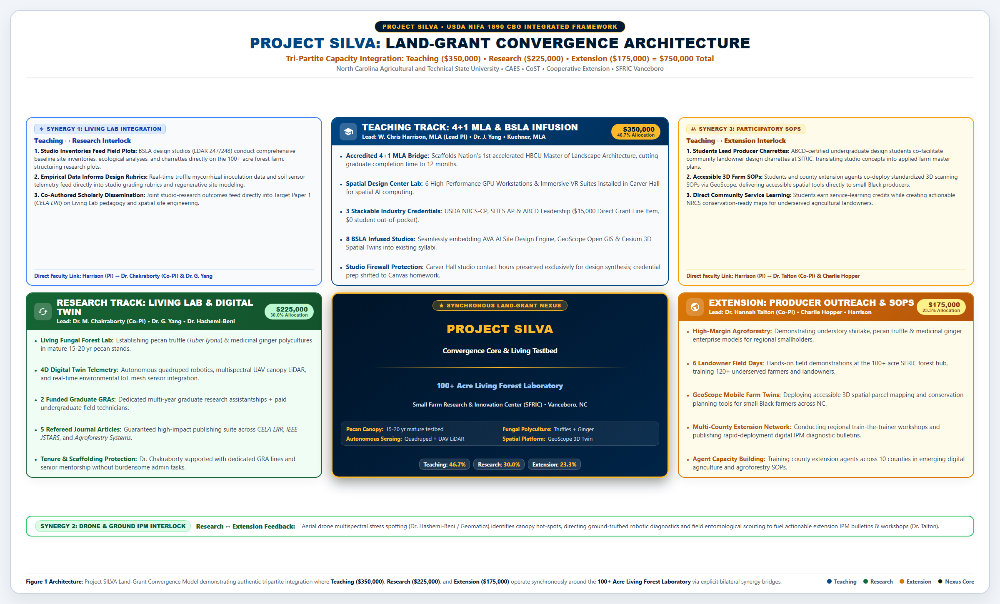
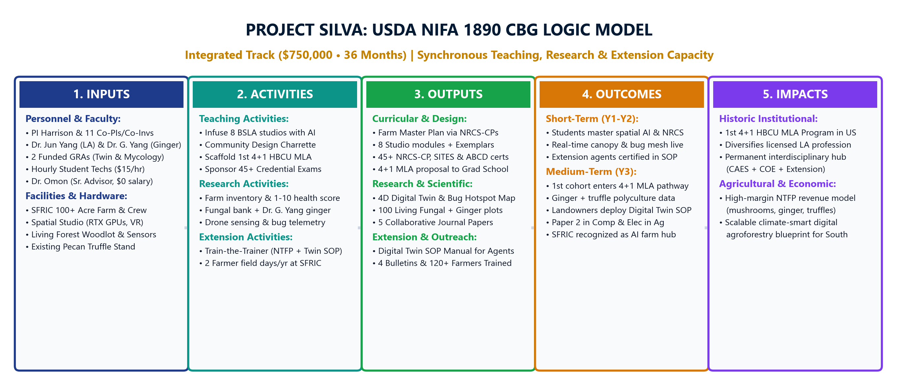
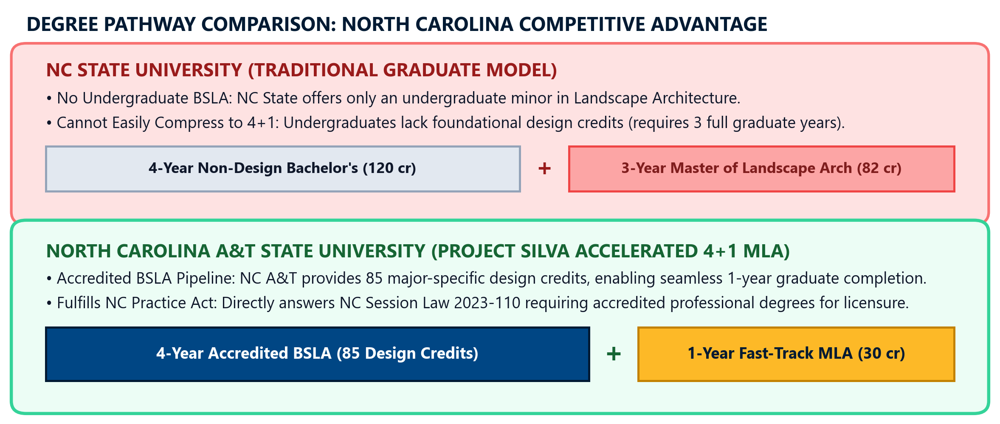
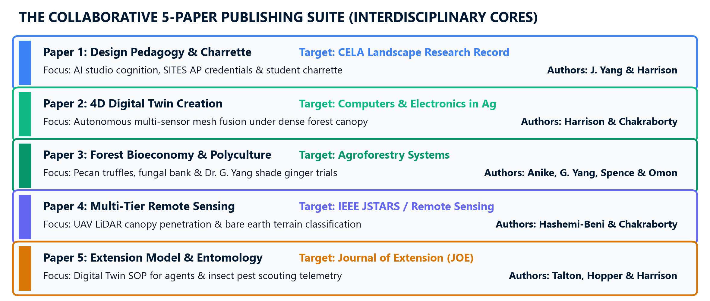
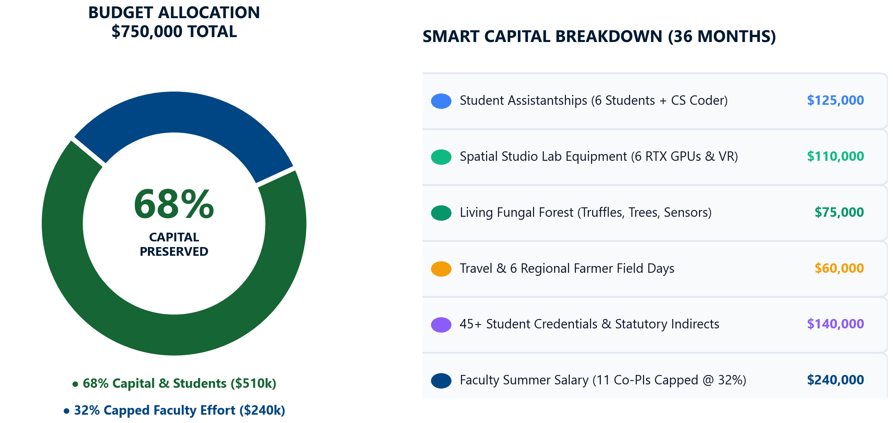
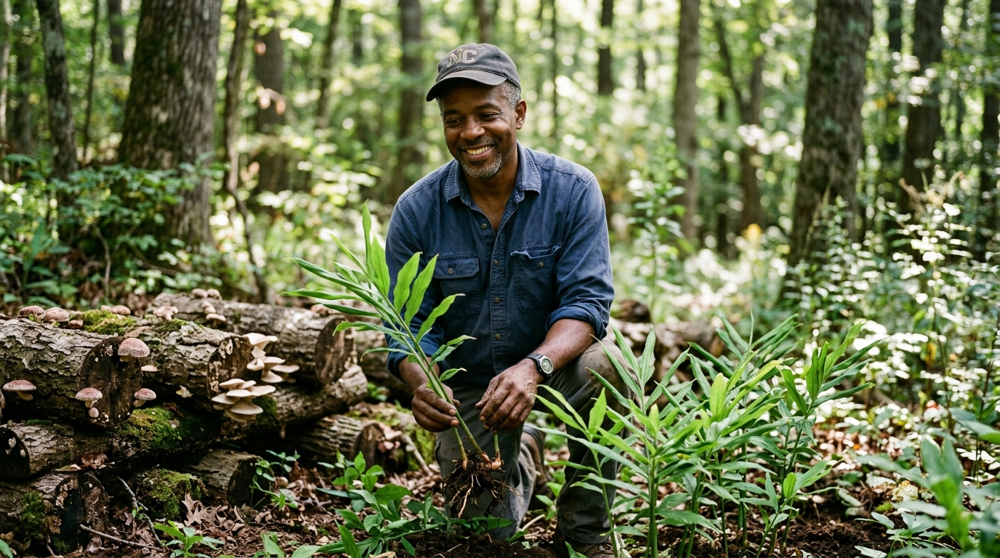
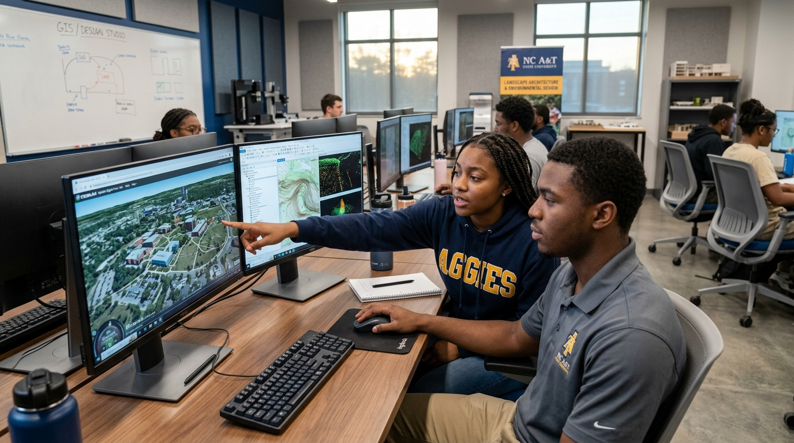
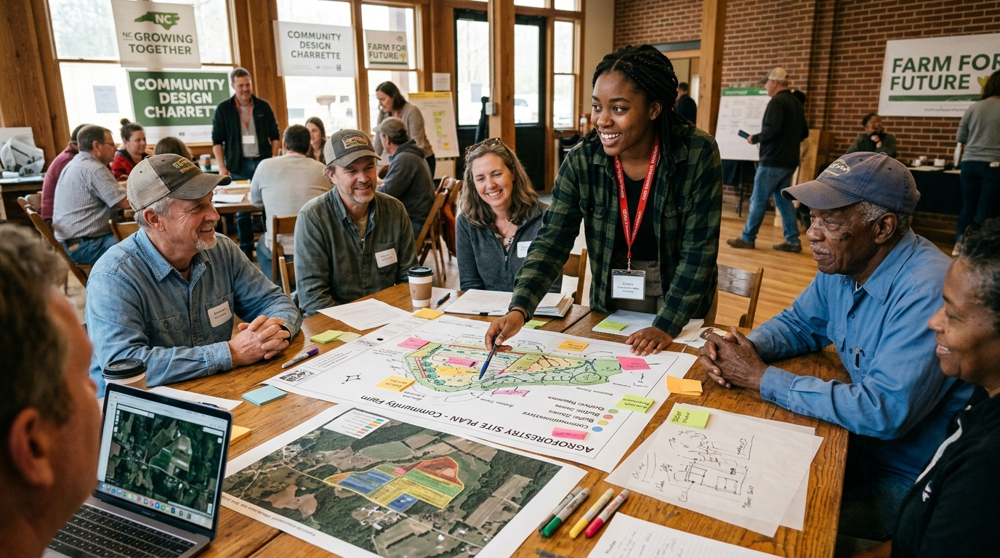

Biological Etymology: Derived from the classical Latin silva ("forest / woodland"), directly honoring Dr. Omon and Dr. Anike's agroforestry and mycology research.
Grant Subtitle: An Integrated 1890 Land-Grant Platform for 3D Digital Twins, Woodland Bioeconomy, and Precision Drone-Robotic Extension.
Overstory & Aerial Sensing: Emphasizes tree crown health, aerial drone LiDAR canopy penetration (Dr. Hashemi-Beni), and the microclimatic protective layer shielding understory polycultures.
Grant Subtitle: Linking 3D Landscape Architecture Studios, Forest Bioeconomy, and Drone-Assisted Field Extension.
Biological & HBCU Anchor: Anchors the biological root-mycorrhizal fungal interface while celebrating 1890 HBCU land-grant legacy and community grounding.
Grant Subtitle: An Integrated Land-Grant Initiative for Digital Landscape Studios, Mycorrhizal Bioeconomy, and Small Farm Extension.
| Identity Option | Full Strategic Expansion | Academic & Biological Domain | Reviewer Psychology & Vibe | Adoption Status |
|---|---|---|---|---|
| PROJECT SILVA | Spatial Intelligence for Living Vegetation & Agroforestry | Forest canopy, silviculture, drone LiDAR, and non-timber forest mycology. | High academic dignity; commands national center prestige. | ★ ADOPTED |
| PROJECT CANOPY | Computational Agroforestry Network & Observation Platform for Yield | Tree crown health, drone LiDAR canopy penetration, microclimatic modeling, and shade crops. | Elevated, expansive; natural protective umbrella for agroforestry systems. | Canopy Alternate |
| PROJECT ROOTS | Resilient Observation & Technology for Soils | Soil health, truffle mycorrhizae, carbon sequestration, and farmer equity. | Deeply grounded in HBCU Land-Grant mission and soil biology. | Heritage Alternate |
Establishes the permanent Living Landscapes & Spatial Digital Twin Design Center & Collaborative Lab Space (within CAES / interdisciplinary academic facilities), equipped with 6 high-performance GPU rendering workstations, immersive VR simulation suites, and drone data docks. Deploys the enterprise dual-engine platform: advancing the Project Director's proven AVA (Adaptive Visualization Assistant) AI design and Sustainable SITES Initiative (SITES v2) 250-point ecological rating engine, seamlessly integrated with GeoScope for parcel-scale GIS, USGS 3DEP topography, SSURGO soils, and drone telemetry. (Under USDA NIFA CBG Educational Technology provisions, funding explicitly supports customizing, expanding, and institutionalizing these advanced spatial tools for multi-user university access.)
Creates permanent biological research infrastructure by establishing The Living Fungal Forest Laboratory & Agroforestry Mycobiome Center across NC A&T research woodlots and the 100+ acre SFRIC facility. Inoculating managed woodland and pecan orchard rootzones with the high-value native pecan truffle (Tuber lyonii) and cultivating medicinal fungal polycultures establishes an enduring field research asset with a 15–20+ year production and scientific horizon. Enables continuous student research in soil carbon flux, fungal biotechnology (Dr. Anike), 3D canopy microclimate modeling (Harrison & Dr. Chakraborty), and high-value non-timber crop viability for underserved landowners.
Establishes an institutionalized dual-track credentialing pipeline where 45+ historically underrepresented students graduate with nationally recognized credentials: NRCS Conservation Planning Apprentice, SITES AP, and ABCD Community Development. Governed by a strict pedagogical studio firewall, credential study and quizzes are housed in asynchronous Canvas homework modules (LDAR 247/248) and new 4+1 MLA graduate courses (LDAR 612/624), preserving 100% of studio class hours for spatial design. A dedicated $15,000 grant line item covers 100% of study bundles and exam fees ($0 student out-of-pocket).
Permanently transforms the 100+ acre Small Farm Research and Innovation Center (SFRIC) into an active Living Extension Lab equipped with autonomous quadruped ("robot dog") scouting, field-scale parcel digital twins, and recurring farmer training infrastructure specifically serving small-scale, limited-resource, and minority North Carolina landowners.
| LDAR 103 LA Discovery | 3 cr | Major Core |
| LDAR 147 Design Foundations I | 3 cr | Studio 1 |
| LDAR 170 LA Graphics I | 3 cr | BIM / CAD |
| ENG 100 Ideas & Expressions I | 3 cr | Gen Ed |
| MATH 101 Analytical Reasoning | 3 cr | Gen Ed |
| FRT 101 University Survival | 1 cr | Orientation |
| Subtotal | 16 cr | 9 LA / 7 GE |
| LDAR 104 LA History | 3 cr | Major Core |
| LDAR 148 LA Fundamentals | 3 cr | Pre-req: 147 |
| LDAR 171 LA Graphics II | 3 cr | Pre-req: 170 |
| LDAR 181 Materials & Construction | 3 cr | Pre-req: 170 |
| ENG 101 Ideas & Expressions II | 3 cr | Gen Ed |
| MATH 102 Analytical Reasoning II | 3 cr | Gen Ed |
| Subtotal | 18 cr | 12 LA / 6 GE |
| LDAR 204 Plant Materials | 3 cr | Pre-req: 148 |
| LDAR 247 Social Systems Studio | 6 cr | Pre-req: 148 |
| SBS Social/Behavioral Science | 3 cr | Gen Ed Elective |
| SR Scientific Reasoning Elective | 4 cr | Gen Ed (w/ Lab) |
| Subtotal | 16 cr | 9 LA / 7 GE |
| LDAR 244 Designing with Plants | 3 cr | Pre-req: 204 |
| LDAR 248 Ecological Systems Studio | 6 cr | Pre-req: 247 |
| LDAR 249 Construction Documents | 3 cr | Pre-req: 181 |
| LDAR 255 Design Theory | 3 cr | Major Core |
| Subtotal | 15 cr | 15 LA / 0 GE |
| LDAR 345 Site Systems | 3 cr | Co-req: 347; Pre: 248 |
| LDAR 347 Landform & Stormwater | 6 cr | Co-req: 345; Pre: 248 |
| LDAR 399 Resume/Portfolio Seminar | 1 cr | Pre-req: 248 |
| AA African American History | 3 cr | Gen Ed Elective |
| GA Global Awareness Elective | 3 cr | Gen Ed Elective |
| Subtotal | 16 cr | 10 LA / 6 GE |
| LDAR 349 GIS in Environmental Design | 3 cr | Pre-req: 247 |
| LDAR 348 Master Planning/Field Study | 6 cr | Pre-req: 248 |
| SR Scientific Reasoning Elective | 3 cr | Gen Ed Elective |
| Free Elective | 3 cr | University Elective |
| Subtotal | 15 cr | 9 LA / 6 GE |
| LDAR 440 Design Proposal Writing | 3 cr | Pre-req: 348 |
| LDAR 447 The Collaborative Studio | 6 cr | Pre-req: 348 |
| LDAR 455 Current Issues & Topics in LA | 3 cr | Pre-req: 348 |
| Subtotal | 12 cr | 12 LA / 0 GE |
| LDAR 442 Design in Practice | 3 cr | Pre-req: 447 |
| LDAR 448 Capstone Project Studio | 6 cr | Pre-req: 447 |
| HFA Humanities/Fine Arts | 3 cr | Gen Ed Elective |
| Subtotal | 12 cr | 9 LA / 3 GE |
| Academic Level | Newly Implemented Core Syllabi | SILVA Embedded Technology & Credentials | Faculty Leadership & Student Progression |
|---|---|---|---|
| Year 1 (Freshman) Foundations & Materials |
LDAR 103 LA Discovery (3 cr) LDAR 104 LA History (3 cr) LDAR 147/148 Design Foundations I & II (6 cr) LDAR 170/171 LA Graphics I & II / BIM (6 cr) LDAR 181 Site Materials & Construction Methods (3 cr) |
• Spatial Design Center high-performance GPU nodes • Generative AI concept synthesis & visual computing • LDAR 181 Technical Materials Mastery: 15-module hardscape assemblies, permeable paving (PICP), concrete joints, subgrade drainage, and structural joinery catalog • Vectorworks Landmark BIM & CAD digital workflow integration |
W. Chris Harrison (Freshman Cohort Lead): Harrison leads foundational design studios (LDAR 147/148, 170/171) and curricular authoring for LDAR 181 Site Materials, establishing hand sketching discipline, material assembly rigor, and early transition into Spatial Design Center GPU workstations. |
| Year 2 (Sophomore) Ecological Systems & Detailing |
LDAR 204 Landscape Plants (3 cr) LDAR 244 Designing with Plants (3 cr) LDAR 247 Social Systems Studio (6 cr) LDAR 248 Ecological Systems Studio (6 cr) LDAR 249 Construction Documents (3 cr) LDAR 255 Landscape Design Theory (3 cr) |
• Environmental Evaluation & NRCS CPA-52: Rigorous baseline ecological assessment, soil infiltration testing, watershed catchment runoff analysis, and resource inventory embedded in LDAR 248 • SITES AP Pathway: 250-point sustainable site performance auditing via the AVA engine • ABCD Certification: Asset-Based Community Development field methods with local communities • Infiltration, soil moisture & FLIR thermal sensor kits |
Dallas Bretzman (Sophomore Cohort Lead) & Dr. Porché Spence: Bretzman directs the sophomore studio sequence (LDAR 247/248), embedding empirical environmental evaluation into LDAR 248 Ecological Systems Studio in direct collaboration with Dr. Spence (Soil Biogeochemistry). Students conduct field evaluations at the SFRIC living lab (Charlie Hopper) and The Living Fungal Forest Laboratory (Dr. Anike & Dr. Isikhuemhen), grounding ecological theory in physical Piedmont agricultural and woodland systems. |
| Year 3 (Junior) Site Engineering & Master Planning |
LDAR 345 Planting Design & Site Systems (3 cr) LDAR 347 Landform & Stormwater Studio (6 cr) LDAR 348 Master Planning Studio (6 cr) LDAR 349 GIS Applications in Planning (3 cr) LDAR 399 Portfolio Seminar (1 cr) |
• GeoScope 3DEP Integration: Real-time USGS 2-ft contours for digital grading & cut/fill calculations • SSURGO soil hydrology & FEMA flood hazard overlays • Master Construction Detailing Exemplar Library: Structural bioretention and permeable paving details |
Dr. Jun Yang (Junior Cohort Lead): Dr. Yang leads intermediate master planning and site systems studios (LDAR 345/347/348), integrating advanced generative AI concept synthesis, spatial cognition metrics, and terrain modeling, supported by her longitudinal IRB-approved research study. |
| Year 4 (Senior BSLA) Professional Practice & Capstone |
LDAR 440 Design Proposal Writing (3 cr) LDAR 442 Design in Practice (3 cr) LDAR 447 Collaborative Studio (6 cr) LDAR 448 Senior Capstone Studio (6 cr) LDAR 455 Current Issues in LA (3 cr) |
• Interactive 3D Digital Twins: High-fidelity drone photogrammetry meshes of farm & urban sites • USDA NRCS Apprentice Conservation Planner (NRCS-CP-Apprentice): 9-step conservation plan certification (Dr. Spence) • LDAR 442 Mastery: Professional practice, contracts, office operations, and licensure preparation |
Jeffrey A. Kuehner (Senior Cohort Lead) & W. Chris Harrison: Kuehner directs senior capstones (LDAR 447/448), LDAR 442 Design in Practice, LDAR 440 Design Proposal Writing, and LDAR 455 Current Issues in LA, bringing 15+ years of professional environmental design and studio practice to portfolio reviews. Harrison & Dr. Chakraborty pair to guide parcel-scale 3D digital twins. |
| Year 5 (+1 Graduate Year) Master of Landscape Arch (MLA) |
LDAR 601 Advanced Spatial AI Studio (3 cr) LDAR 612 Resilient Site Systems & SITES AP (3 cr) LDAR 624 Community Spatial Practice & ABCD (3 cr) LDAR 605 Geospatial Research Methods (3 cr) LDAR 611 Master's Terminal Thesis (6 cr) |
• 4D environmental simulation (drone LiDAR + robotic telemetry) • Advanced structural civil details & carbon flux modeling • L.A.R.E. Licensure Masterclass & multi-agency federal contracting (advancing beyond undergraduate LDAR 442 Design in Practice) • Peer-reviewed journal manuscript defense |
Graduate Faculty Leadership Core: Harrison, Dr. Yang, Kuehner, Dr. Chakraborty, and Dr. Beni deliver advanced graduate studios meeting full Landscape Architectural Accreditation Board (LAAB) standards—establishing the first 4+1 MLA at an HBCU. |
A common vulnerability in federally funded curriculum proposals is the attempted insertion of multiple-choice test preparation directly into creative design studios—triggering intense faculty kickback that studio hours are sacred for design synthesis, not rote exam memorization. To protect the integrity of the design studio while fulfilling USDA NIFA workforce objectives, Project SILVA establishes a strict pedagogical firewall:
• Zero Studio Class Time Lost: In-person studio contact hours in Carver Hall (LDAR 247, 248, 347, 348, 447) remain 100% dedicated to manual drafting, desk critiques, 3D terrain modeling, and spatial pin-ups.
• Asynchronous Canvas Modules: Exam preparation is housed in existing courses as structured, self-paced weekly Canvas homework modules (1.5 hrs/wk) with auto-graded mastery quizzes:
– LDAR 248 (Site Construction & Grading): Embeds the USDA NRCS Apprentice Planner (NRCS-CP Level I) modules (RUSLE2 soil erosion, water quality, and 9-step planning).
– LDAR 247 (Social Systems Studio / Site Design): Embeds the SITES AP modules (SITES v2 Reference Guide, 250-point rating system, vegetation, and stormwater credits).
• In-Studio Design Application: Rather than taking tests during studio, students apply the SITES v2 scorecard and NRCS conservation criteria as the formal design rubrics for their 100-acre SFRIC Living Forest master plans. Passing homework quizzes unlocks grant-funded exam vouchers.
• Direct Degree Incubation: Project SILVA curriculum development funds the formal creation and institutional catalog routing of two brand new graduate courses through the NC A&T Graduate Council to anchor the upcoming 4+1 Master of Landscape Architecture:
– LDAR 612: Resilient Site Systems & SITES Rating Credentials (3 cr): Advanced graduate seminar on regenerative landscape engineering, soil carbon flux (Dr. Spence), and closed-loop hydrology. Serves as the formal institutional home for advanced SITES AP and NRCS Conservation Planner certification.
– LDAR 624: Community Spatial Practice & Participatory Agroforestry (3 cr): Graduate studio seminar paired with Charlie Hopper's SFRIC facility. Embeds the ABCD Community Leadership Credential and community design charrette facilitation, training graduate students to co-design with rural woodland owners.
• Accelerated 4+1 Transition: Undergraduates entering their senior year can take LDAR 612/624 for dual bachelor's/master's credit, seamlessly accelerating their path to professional licensure under NC Session Law 2023-110.
| National Credential & Body | Prep & Study Hours | Standard Exam Cost | Grant-Sponsored Fee (Per Student) | Curricular Home |
|---|---|---|---|---|
|
USDA NRCS Apprentice Planner NRCS-CP Level I (GM-180 Part 409) |
~30–35 Hours AgLearn modules, RUSLE2 soil erosion & 9-step plan |
$0 (Federal Partner) |
$0 to Student Grant provides $25 soil testing manual bundle |
LDAR 248 Canvas Modules (Undergrad) LDAR 612 Seminar (Graduate) |
|
SITES Accredited Professional SITES AP (GBCI / USGBC) |
~40–50 Hours SITES v2 reference guide, 250-pt scorecard & practice tests |
$350 (Standard) $150 (Student) |
$0 to Student $150 exam fee + $35 study guide paid by grant |
LDAR 247 Canvas Modules (Undergrad) LDAR 612 Seminar (Graduate) |
|
ABCD Community Leadership DePaul ABCD Institute / Extension |
~15–20 Hours 4 facilitation workshops + SFRIC charrette leadership |
$125 (Standard) |
$0 to Student $100 registration & certificate paid by grant |
SFRIC Charrette Workshop (Undergrad) LDAR 624 Seminar (Graduate) |
| TOTAL COHORT IMPACT |
~90–100 Study Hours Total (Distributed: ~1.5–2.0 hrs/wk) |
~$625 / Student Value |
100% Grant-Underwritten $15,000 Direct Grant Line Item for 45+ Students |
Permanent Dual-Track Pipeline (Undergrad + Grad) |
Dossier Prepared For: Senior Faculty Advisor Dr. Omoanghe Isikhuemhen, Department Chair Dr. Niroj Aryal, and CAES Dean Dr. Gregory Goins.
Executive Synthesis: Project SILVA creates permanent institutional Land-Grant capacity under the $750,000 USDA NIFA Integrated Track by strictly preserving 68% ($510,000) for capital equipment, computing, and student stipends while capping faculty summer salary at 32% ($240,000 across 3 years). Senior Faculty Advisor Dr. Omon Isikhuemhen is protected under an advisory role ($0 grant salary), and day-to-day experimental trials and digital twin mesh fusion are driven by a dedicated Post-Doctoral Research Associate and 2 Funded Graduate Research Assistants (GRAs). The curriculum scaffolds the Nation's First 4+1 HBCU Master of Landscape Architecture (MLA) and fully finances national examinations for 45+ student certifications (NRCS-CP, SITES AP, ABCD).
| Dimension | Routine / Non-Capacity Proposal (Disqualified) | Project SILVA Capacity Transformation (Funded & Enduring) |
|---|---|---|
| Academic Degree Infrastructure | Teaching existing undergraduate lecture courses; incremental syllabus updates; no new degree or professional accreditation creation. | Graduate Elevation Bridge: Curricular, laboratory, and technological scaffolding laying the essential groundwork to establish the Accelerated 4+1 Master of Landscape Architecture (BSLA + MLA) (first HBCU LAAB-accredited MLA in modern decades) and a Multidisciplinary M.S. in Applied Environmental Planning. |
| Computing & Spatial Hardware | Purchasing off-the-shelf consumer laptops or temporary software licenses that expire at grant termination. | Permanent Lab Asset & Enterprise Toolset (AVA + GeoScope): Establishes the permanent Spatial Design Center & Computing Lab Space (6 GPU workstations, VR suites, drone docks) and deploys the dual-engine spatial computing architecture: the AVA (Adaptive Visualization Assistant) AI design and SITES v2 ecological rating engine coupled with the GeoScope open GIS intelligence platform. |
| Research & Biological Assets | Single-investigator summer research projects conducted in departmental isolation with temporary findings. | Living Fungal Forest Laboratory & Tri-College Core: Establishes permanent biological field infrastructure through the Living Fungal Forest Laboratory (pecan truffle Tuber lyonii inoculated rootzones and medicinal fungal polycultures at SFRIC and research woodlots with 15–20 year research lifespans), coupled with drone LiDAR point cloud archives and a multi-agency grant engine linking CAES, CoST, and COE. |
| Student Outcomes & Human Capital | Standard course grades; generic undergraduate diplomas without external industry validation. | Verifiable Industry Credentials: 45+ historically underrepresented students earn nationally recognized certifications (USDA NRCS Apprentice Conservation Planner (NRCS-CP-Apprentice), SITES AP, ABCD Community Leadership), funneling diverse talent directly into federal agencies and premier firms. |
| Extension & Field Assets | Passive PowerPoint seminars or webinars with no active field demonstration tech or landowner engagement. | Living Extension Lab: Transforms the 100+ acre SFRIC facility into a permanent living lab featuring autonomous quadruped ("robot dog") scouting, digital farm twins, and recurring regional farmer training field days. |
| Post-Grant Longevity | Project activity terminates when grant funds cease; equipment is abandoned or repurposed for routine office tasks. | Institutionalized & Sustainable: Permanent physical lab space, institutionalized course syllabi, recurring graduate student tuition revenue, university-hosted web engines, and ongoing field research plots. |
North Carolina A&T currently offers the Bachelor of Science in Landscape Architecture (BSLA). To elevate the university's academic profile and meet soaring national demand for minority environmental leaders, this Capacity Building Grant serves as the direct technological and curricular incubator for two planned graduate degree programs:
Lays the essential curricular, computational, and accreditation groundwork to establish North Carolina A&T's first-professional graduate degree required for professional licensure. The digital twin design center, high-performance spatial computing hardware, and SITES v2 credentialing modules developed under this grant constitute the exact curricular and technical infrastructure required for Landscape Architectural Accreditation Board (LAAB) graduate accreditation feasibility—positioning NC A&T to become the national flagship for minority graduate landscape architects.
Constructs the interdisciplinary curriculum and research laboratory scaffolding for a future Master of Science jointly administered across CAES, CoST, and COE. Graduate students will specialize in precision agroforestry, remote sensing, and resilient watershed planning. The research plots (Dr. Anike), drone LiDAR pipelines (Dr. Beni & Dr. Chakraborty), and NRCS conservation frameworks (Dr. Spence) form the immediate thesis laboratories and graduate research positions.
• 4 Full-Time Faculty (4.0 FTE): Harrison (Freshman Lead), Dallas Bretzman (Sophomore Lead), Dr. Jun Yang (Junior Lead), Jeffrey A. Kuehner (Senior Lead).
• 2 Adjunct Faculty (1.0 FTE): Required to cover studio overflow sections and plant electives.
• Total Current Capacity: 5.0 FTE Verified (Exactly meets LAAB minimum of 5.0 for an undergraduate program).
• LAAB Dual-Program Mandate: Academic units offering both bachelor's and master's degrees must maintain at least 7.0 instructional FTE, with at least 5.0 full-time faculty holding professional LA degrees.
• Grant Institutional Leverage: This $750K grant provides the external funding, faculty release, and graduate tuition model enabling CAES leadership to secure the 5th full-time tenure-track faculty line from the university.
To safeguard the scholarly velocity, tenure progression, and operational focus of junior faculty within a cross-college consortium, Project SILVA establishes formal Executive Governance Protocols ensuring clear administrative authority, supervisory accountability, and protection against workload imbalance:
| Investigator & Title | Discipline & College | Core Expertise & Grant Value | Role, Placement & Funding Status |
|---|---|---|---|
|
W. Chris Harrison
Assistant Professor of Landscape Architecture
Project Director • Lead PI • 3D Modeling Co-Lead
|
Dept. of Natural Resources & Environmental Design (NRED) CAES (Faculty) |
Spatial computing, interactive GIS interfaces (GeoScope / AVA), 3D digital twin design, photogrammetric reconstruction, resilient master planning, SITES v2 rating system. |
Overall Project Director (Lead PI) & 3D Modeling Co-Lead Directs Digital Twin Studio, platform architecture, DOR/NIFA compliance, and student studio synthesis. Directly paired with Dr. Momtanu Chakraborty to co-lead all 3D model creation, UAV photogrammetric mesh reconstruction, and interactive digital twin spatial simulations across AVA and GeoScope. (Faculty Effort Allocation) |
|
Dr. Jun Yang, Ph.D.
Associate Professor of Landscape Architecture
Co-PI • AI Pedagogy, Design Charrette & Cognition Lead
|
Dept. of Natural Resources & Environmental Design (NRED) CAES (Faculty) |
Design studio leadership, generative spatial AI design pedagogy, SITES v2 250-point rating criteria, community design charrettes, design cognition & behavioral protocol analysis, CELA/EDRA scholarship. |
Co-PI (Studio Pedagogy, Community Design Charrette & SITES Lead) Co-leads studio curriculum enrichment with Lead PI Harrison; co-leads the on-farm Community Design Charrette with local growers and Extension agents; infuses SITES v2 250-point criteria into design studios; directs cognitive design protocol research; Lead Author on Paper 1 (CELA Landscape Research Record). (Faculty Effort Allocation) |
|
Dr. Guochen Yang, Ph.D.
Professor of Horticulture • ASHS "HortLegend" (2025)
Co-PI • Forest Agriculture & Specialty Crops Lead
|
Dept. of Natural Resources & Environmental Design (NRED) CAES (Faculty) |
Specialty crop production, micropropagation and tissue culture, shade and light physiology, North Carolina ginger cultivation pioneer, former NC Industrial Hemp Commissioner. |
Co-PI (Forest Agriculture & Ginger Polyculture Lead) Directs the understory ginger cultivation trials beneath hardwood research canopies in Research Area 2; supplies clean micropropagated ginger germplasm; evaluates light filtration, canopy microclimate, and shade tolerance for high-value woodland polycultures. (Faculty Effort Allocation) |
|
Jeffrey A. Kuehner, MLA, ASLA
Full-Time Lecturer of Landscape Architecture
Co-Investigator • Senior Capstone, Practice & Construction Detailing Lead
|
Dept. of Natural Resources & Environmental Design (NRED) CAES (Faculty / Lecturer) |
Senior capstone design studio leadership (LDAR 447/448), professional practice & design proposal writing (LDAR 440/442), professional construction documentation (LDAR 249 building upon LDAR 181), constructible detailing, site engineering & ASLA standards. |
Co-Investigator (Senior Capstone Studio, Professional Practice & Construction Detailing) Directs senior capstone design execution (LDAR 447/448), proposal writing (LDAR 440), design in practice (LDAR 442), and professional construction documents (LDAR 249 building upon LDAR 181); embeds the Master Construction Detailing Exemplar Library into senior capstone projects. (Academic Effort Allocation) |
|
Dr. Leila Hashemi Beni
Associate Professor & GEMS Director
Co-PI • Geospatial Lead
|
Dept. of Built Environment / GEMS Institute College of Science & Technology (Faculty) |
Aerial/terrestrial LiDAR, UAV remote sensing, photogrammetry, point cloud classification, deep learning for environmental feature extraction. |
Co-PI (Geospatial & Aerial Drone Lead) Directs aerial drone multispectral/LiDAR overflights for tree canopy and forest crown diagnostics (identifying foliar stress from above), point cloud classification, and student training. (Faculty Effort Allocation) |
|
Dr. Felicia N. Anike
Research Scientist / Faculty • Fungal Biotechnology
Co-PI • Bioeconomy Lead
|
Dept. of Natural Resources & Environmental Design (Carver Hall) CAES (Faculty / Research Scientist) |
Mycology, non-timber forest products (NTFPs), truffle biotechnology (Tuber lyonii), fungal fermentation, crop residue valorization, agroforestry ecology. |
Co-PI (Forest Bioeconomy Research Lead) Directs woodland field plots, fungal inoculation trials, canopy soil dynamics, and agroforestry carbon metrics. (Succeeding Dr. Omon Isikhuemhen, who serves as Senior Project Advisor) |
|
Dr. Momtanu Chakraborty
Assistant Professor of Computational Data Science and Engineering
Co-PI • Robotics, UAV & 3D Modeling Co-Lead
|
Department of Computational Data Science and Engineering (McNair Hall) College of Engineering (COE) (Faculty) |
UAV mission planning, multispectral sensor data pipelining, agricultural robotics hardware integration, AVA platform integration, 3D mesh reconstruction, point cloud-to-GIS data sync. |
Co-PI (Robotics, UAV Systems & 3D Modeling Co-Lead) Directly paired with Project Director W. Chris Harrison to co-lead all 3D modeling, UAV photogrammetry mesh pipelines, and interactive digital twin spatial engines. Supervises the funded Computer Science / Engineering Student Assistant responsible for autonomous robot dog programming, ROS navigation, and field telemetry. (Faculty Effort Allocation) |
|
Dr. Porché L. Spence
Associate Professor of Environmental Studies
Co-PI • Conservation Lead
|
Dept. of Natural Resources & Environmental Design (Carver Hall) CAES (Faculty) |
Soil health, urban watershed biogeochemistry, water quality diagnostics, ESA Diversity in Ecology Awardee, experiential student mentoring. |
Co-PI (Conservation & Credentials Lead) Directs NRCS Conservation Planning alignment, soil/water lab analysis, and student research cohort mentoring. (Faculty Effort Allocation) |
|
Dr. Chastity Warren English
Associate Professor & Program Coordinator
Co-PI • Evaluation Lead
|
Dept. of Agribusiness, Applied Economics and Agriscience Education (Carver Hall 251-A) CAES (Faculty) |
Agricultural pedagogy, learning outcome assessment, ACUE certified instruction, USDA evaluation frameworks, curriculum efficacy research. |
Co-PI (Project Evaluation Director) Directs independent educational assessment, pre/post competency testing, logic model metrics, and pedagogy publications. (Faculty Effort Allocation) |
|
Charles "Charlie" Hopper
Director, Small Farm Research & Innovation Center
Senior Collaborator • Living Lab Director
|
SFRIC / Cooperative Extension CAES Staff / Center Administration |
Small farm administration, landowner engagement, ABCD (Asset-Based Community Development) methodologies, rural agricultural networks. |
Senior Institutional Collaborator Provides SFRIC 100+ acre living lab demonstration site, coordinates farmer field day logistics, and leads ABCD community engagement. (No Grant Salary Required — Administrative Facility Host) |
|
Dr. Hannah Talton, Ph.D., D.P.M.
Assistant Professor & Extension Specialist (Entomology, Plant Pathology & IPM)
Co-Investigator • Entomology, Plant Pathology & Field IPM Lead
|
Cooperative Extension / Agricultural Research CAES Cooperative Extension (Faculty & Extension Specialist) |
Entomological diagnostics, insect vector monitoring, wood/fungus-associated beetle ecology, canopy defoliator dynamics, plant pathology, integrated pest management (IPM), grower diagnostic field clinics. |
Extension Co-Investigator (Entomology, Field Diagnostics & IPM Lead) Directs entomological research in Research Area 3 (insect trapping, vector identification, and beetle/pest telemetry fused with the 4D digital twin); co-hosts regional landowner field days at SFRIC; authors 4 Extension technical bulletins; Lead Author on Paper 5 (Journal of Extension). (Workload Protection: 100% relieved of robotics coding, ROS engineering, and drone piloting, which are managed by Dr. Chakraborty and funded student assistants). |
|
Dr. Omoanghe S. Isikhuemhen
Research Professor of Fungal Biotechnology & Agroforestry
Senior Faculty Project Advisor
|
Dept. of Natural Resources & Environmental Design (Carver Hall) CAES (Faculty) |
Forest ecology, non-timber forest products, truffle biotechnology, international mycology networks, strategic project advisory. |
Senior Faculty Project Advisor Provides high-level scientific guidance and research mentorship to Dr. Anike and the project team without Co-PI administrative or fiscal encumbrances. |
| Investigator & Role | Grant Effort | Primary Operational Domain & Assigned Scope | Individual Deliverables & Boundary Accountability |
|---|---|---|---|
|
W. Chris Harrison, MLA Project Director • Lead PI • 3D Modeling Co-Lead Landscape Architecture • CAES |
2.0 Person-Mos/yr Summer + 15% AY Direction |
Overall Project Leadership & 3D Spatial Computing: Directs $750k fiscal/administrative compliance, annual NIFA REEport filings, and DOR liaison; oversees enterprise GeoScope digital twin deployment; supervises commissioning of the Spatial Design Center Lab; embeds SITES v2 credentialing into senior capstone studios; co-leads the 3D Modeling & Digital Twin Core paired directly with Dr. Momtanu Chakraborty, generating interactive 3D site meshes, photogrammetric reconstructions, and web-based spatial twins across AVA and GeoScope. |
• GeoScope production platform live (Mo 9) • Spatial Design Center 6-GPU setup (Mo 6) • Interactive 3D Digital Twin Models of SFRIC & Woodlots (Mo 12, paired with Chakraborty) • Annual NIFA Progress Reports (Mo 12, 24, 36) • Co-Lead Author on Paper 2 (Digital Twins) & Co-Author on Papers 1, 3, 4, 5 in 5-Paper Suite Boundary: Overall fiscal governance and co-leads all 3D modeling/digital twins paired with Chakraborty; does not run AI cognition testing (Yang) or site grading details (Kuehner). |
|
Dr. Jun Yang, Ph.D. Co-PI • AI Pedagogy Lead Landscape Architecture • CAES |
1.0 Person-Mo/yr Summer + 10% AY Effort |
Junior Studio Leadership, AI Pedagogy & Design Cognition: Directs junior design studios (LDAR 345 Site Systems, LDAR 347 Landform & Stormwater, LDAR 348 Master Planning Studio, and LDAR 349 GIS Applications); leads longitudinal IRB-approved cognition study tracking spatial synthesis, design velocity, and mental workload with generative AI; mentors intermediate design cohorts in computational master planning. |
• AI studio modules & syllabi updates (Mo 10) • IRB approval & cognition dataset (Mo 14) • Lead Author on Paper 1 (AI Studio Pedagogy) in the 5-Paper Suite (CELA LRR / EDRA) • Co-Lead on SEC-02 & SEC-03 proposal writing Boundary: Sole faculty lead on design cognition research; does not manage hardware procurement (Harrison). |
|
Jeffrey A. Kuehner, MLA, ASLA Co-Inv • Senior Practice & Detailing Lead Lecturer of Landscape Arch • CAES |
1.0 Person-Mo/yr Summer + Studio Instruction |
Senior Capstone Studio, Professional Practice & Construction Detailing: Directs senior capstones (LDAR 447 The Collaborative Studio & LDAR 448 Capstone Project Studio), design proposal writing (LDAR 440), design in practice (LDAR 442), and professional construction documentation (LDAR 249); develops the Master Construction Detailing Exemplar Library (linking LDAR 181 materials and GeoScope 3DEP topo data to constructible, buildable site details for senior capstone defense). |
• Master Construction Detailing Exemplar Library (15-module hardscape, bioretention, and permeable paving catalog) (Mo 20) • Senior capstone technical construction documentation and buildability reviews (LDAR 447/448) • Integration of professional specifications and contract drafting into LDAR 249 & LDAR 440/442 • Co-Author on SEC-03 (Teaching Infrastructure) and SEC-07 (Facilities & Detailing Labs) Boundary: Directs senior capstone design, practice, and construction documentation; does not direct junior AI cognitive testing (Yang) or server/drone systems (Harrison & Chakraborty). |
|
Dr. Chastity Warren English Co-PI • Evaluation Director Ag & Extension Education • CAES |
1.0 Person-Mo/yr Summer (Y1–Y3) |
Independent Project Evaluation: Directs formal, ACUE-grounded assessment plan across all teaching and extension modules; develops project Logic Model, pre/post competency rubrics, and student retention/graduation tracking; measures credential attainment across NRCS, SITES AP, and ABCD cohorts. |
• Project Logic Model & Evaluation Plan (Mo 4) • Validated Pre/Post Assessment Instruments (Mo 6) • Annual Independent Evaluation Reports (Mo 12, 24, 36) • Co-Author on Paper 1 (Pedagogy) & Paper 5 (Extension) in the 5-Paper Suite (NACTA/JOE) Boundary: Completely independent evaluation oversight; does not teach studios or manage lab hardware. |
|
Dr. Porché L. Spence, Ph.D. Co-PI • Conservation Lead Environmental Studies • CAES |
1.0 Person-Mo/yr Summer + 10% AY Effort |
Conservation Credentials & Soil Biogeochemistry: Directs NRCS Conservation Planning Apprentice credential curriculum (USDA 9-step planning); leads lab analysis of soil health, soil organic carbon (SOC), and water quality from research woodlots; correlates ground-truth carbon with canopy remote sensing. |
• NRCS Conservation Planning Course Modules (Mo 9) • Soil Biogeochemistry & Carbon Stock Database (Mo 18, 30) • Mentoring 10 undergraduate student researchers • Lead Author on SEC-10 (Mentoring & Diversity Plan) Boundary: Sole lead for NRCS credentialing & soil carbon lab assays; does not run fungal inoculations (Anike) or drones (Beni). |
|
Dr. Leila Hashemi Beni, Ph.D. Co-PI • Geospatial Lead Built Environment / GEMS • CoST |
1.0 Person-Mo/yr Summer (Y1–Y3) |
LiDAR Remote Sensing & Spatial Data Pipeline: Directs UAV and terrestrial LiDAR data collection missions across research woodlots and SFRIC; manages point cloud classification (canopy height models, ground elevation DEMs); provides calibrated spatial data layers to the GeoScope engine. |
• Calibrated LiDAR 3D Point Cloud Archive (Mo 10) • Classified Digital Surface Models & CHM (Mo 18) • Data Management Plan (DMP) Open Repository (Mo 6) • Lead Author on Paper 4 (LiDAR & Soil Carbon) & Co-Author on Paper 2 in 5-Paper Suite; Lead on SEC-07 & SEC-09 Boundary: Aerial/terrestrial LiDAR hardware & point cloud processing; does not manage robot dog scouting (Talton/Hopper). |
|
Dr. Felicia N. Anike, Ph.D. Co-PI • Bioeconomy Lead Fungal Biotechnology • CAES |
1.5 Person-Mos/yr Summer (Y1–Y3 Research) |
Forest Bioeconomy & Fungal Biotechnology: Directs agroforestry field trial establishment, fungal inoculation protocols (pecan truffle Tuber lyonii and medicinal fungi), mycorrhizal colonization tracking, soil enzyme assays, and non-timber forest crop viability in Carver Hall labs and field plots. |
• Agroforestry Inoculation Protocols & Field Setup (Mo 8) • Truffle Colonization & Soil Microbiome Dataset (Mo 20, 32) • Co-Lead Author on SEC-04 (Research Plan) • Lead Author on Paper 3 (Fungal Forest & Truffle Bioeconomy) in 5-Paper Suite (Agroforestry Systems / Mycorrhiza) Boundary: Full scientific ownership of fungal/truffle research; succeeds Dr. Omon, who serves as Senior Project Advisor. |
|
Dr. Momtanu Chakraborty, Ph.D. Co-PI • Robotics, UAV & 3D Modeling Co-Lead Computational Data Science & Engineering • COE |
1.0 Person-Mo/yr Summer (Y1–Y3) |
3D Modeling, UAV Sensor Telemetry & Simulation Engineering: Co-leads the 3D Modeling & Digital Twin Core paired directly with Lead PI W. Chris Harrison; engineers the UAV photogrammetry-to-3D-mesh processing pipeline, point-cloud conversion, and automated sensor telemetry into GeoScope and AVA; co-directs drone flight missions with CoST; provides engineering support for robotic quadruped sensing. |
• Multispectral UAV Flight Protocols & Calibration (Mo 8) • Calibrated 3D Photogrammetric Site Meshes & Point Clouds (Mo 12, paired with Harrison) • Automated Sensor Telemetry-to-GeoScope 3D Pipeline (Mo 16, paired with Harrison) • Joint Landscape Architecture & Engineering 3D Modeling Workshops (Mo 18) • Co-Lead Author on Paper 2 (3D Digital Twins & Telemetry) & Co-Author on Paper 4 in 5-Paper Suite Boundary: Co-leads all 3D modeling, UAV photogrammetry meshes, and telemetry engineering paired with Harrison; does not manage farmer field day recruitment (Hopper) or plant IPM SOPs (Talton). |
|
Charles "Charlie" Hopper Senior Collaborator • Living Lab Director, SFRIC • CAES Staff |
$0 Grant Salary (12-Mo Administrative Host) |
SFRIC Living Lab Staging & Landowner Outreach: Hosts and stages the Living Extension Lab across SFRIC's 100+ acre facility; directs logistics, recruitment, and community engagement for 6 regional landowner field days; leads ABCD (Asset-Based Community Development) workshops for students and farmers. |
• Facility Access Agreement & Living Lab Setup (Mo 1) • 6 Landowner Field Demonstration Days at SFRIC (Mo 14, 18, 22, 26, 30, 34) • ABCD Community Leadership Training Modules (Mo 12, 24) • Co-Author on SEC-05 and SEC-07 Boundary: Facility director & community engagement; zero grant fiscal accounting or classroom grading duties. |
|
Dr. Hannah Talton, Ph.D., D.P.M. Co-Inv • Extension & IPM Lead Extension Plant Pathology Specialist • Extension/CAES |
Extension Effort + Specialist Summer Support |
Multi-Tier Scouting SOPs & Extension Media: Develops Standard Operating Procedures for integrated field scouting—coupling aerial drone canopy health assessments (overstory) with ground quadruped/rover inspection (understory/trunk disease); validates disease/pest diagnostic protocols; authors 4 practical, adaptable NC Cooperative Extension Technical Bulletins for small farmers. |
• Integrated Drone Canopy & Ground Scouting SOP Guide (Mo 15) • 4 NC Cooperative Extension Technical Bulletins (co-designed with growers, Mo 18, 24, 30, 36) • Live diagnostic field demonstrations at all 6 SFRIC field days • Lead Author on SEC-05 (Extension & Outreach Plan) Boundary: Agronomic IPM diagnostics, plant pathology validation, and Extension grower outreach. Zero programming duties: all robotics coding, ROS navigation, and drone telemetry are engineered by Dr. Chakraborty and a dedicated funded CS/Engineering Student Assistant. Deliverables maintain built-in flexibility based on farmer needs. |
|
Dr. Omoanghe S. Isikhuemhen Senior Faculty Project Advisor Professor of Mycology • CAES |
$0 Grant Salary (Senior Advisory Council) |
Scientific Mentorship & Research Advisory: Serves as high-level scientific advisor to Dr. Felicia Anike and project leadership; advises on truffle mycorrhizae experimental design, field inoculation viability, and international agroforestry standards; conducts peer reviews of draft manuscripts. |
• Quarterly scientific advisory reviews & protocol audits (Mo 6, 12, 18, 24, 30, 36) • Critical pre-submission review of 2 agroforestry journal manuscripts Boundary: High-level scientific advisor; bears zero Co-PI fiscal, reporting, or day-to-day administrative burdens. |
| Investigator & Role | Terminal Degree & Academic Home | Verified Domain Track Record & Prior Honors | Assigned Proposal Scope & Operational Readiness |
|---|---|---|---|
|
W. Chris Harrison, MLA
Assistant Professor of Landscape Architecture
Project Director • Lead PI • 3D Modeling Co-Lead
|
Master of Landscape Architecture (MLA) Terminal Professional Degree Dept. of Natural Resources & Environmental Design (NRED) CAES (Faculty / Program Coordinator) |
• Program Coordinator leading design and implementation of NC A&T's new 120-credit BSLA curriculum • Lead developer & software architect of AVA (Adaptive Visualization Assistant) and GeoScope GIS spatial engines • SITES AP accredited professional and educator; author of automated 250-point SITES v2 ecological rating algorithms • Co-investigator on USDA NIFA Evans-Allen research projects focusing on campus digital twins and environmental data |
Project Governance, 3D Spatial Computing & SITES Curriculum: Directs overall $750k fiscal/administrative compliance, university DOR/REEport filings; leads deployment of GeoScope/AVA spatial engines; directly paired with Dr. Momtanu Chakraborty to co-lead all 3D digital twin model generation, UAV photogrammetric reconstruction, and web spatial simulation. |
|
Dr. Momtanu Chakraborty, Ph.D.
Assistant Professor of Computational Data Science and Engineering
Co-PI • Robotics, UAV & 3D Modeling Co-Lead
|
Ph.D. in Computational / Electrical & Computer Engineering Department of Computational Data Science and Engineering (McNair Hall) College of Engineering (COE) |
• Published expert in agricultural robotics, sensor telemetry, and machine vision • Directs precision bioengineering pipelines and UAV multispectral calibration • Published authority in machine learning, computer vision, and environmental data science • Bridges College of Engineering (COE) data science pipelines with CAES spatial and agricultural computing |
3D Modeling, Sensor Telemetry & Engineering Simulation: Co-leads the 3D Modeling & Digital Twin Core paired directly with Project Director W. Chris Harrison; engineers UAV photogrammetry-to-3D-mesh processing pipelines, point-cloud conversion, and automated telemetry ingestion into GeoScope; co-directs UAV flights with CoST. |
|
Dr. Jun Yang, Ph.D.
Assistant Professor of Landscape Architecture
Co-PI • AI Pedagogy & Design Cognition Lead
|
Ph.D. in Architecture & Design Research (Virginia Tech) M.S. in Computer Science, AI Track (Georgia Tech) MLA (Politecnico di Milano) • B.A. (Nankai Univ.) Dept. of Natural Resources & Environmental Design (NRED) • CAES (Faculty) |
• Nationally recognized scholar in AI design cognition and pedagogical tracking • Multiple peer-reviewed articles in Landscape Research Record (CELA) and EDRA • Expert in visual spatial synthesis, behavioral analytics, and design computing • Lead instructor for junior design studios and master planning sequences (LDAR 345, 347, 348, 349) |
AI Studio Pedagogy & Design Cognition Study: Directs generative AI design integration in foundational studios; leads longitudinal IRB-approved student cognition study evaluating spatial synthesis velocity, mental workload, and graphic ideation with AI tools vs. traditional methods. |
|
Jeffrey A. Kuehner, MLA, ASLA
Full-Time Lecturer of Landscape Architecture
Co-Investigator • Senior Capstone, Practice & Construction Detailing Lead
|
Master of Landscape Architecture (MLA) Dept. of Natural Resources & Environmental Design (NRED) CAES (Faculty / Lecturer) |
• 15+ years of professional environmental design, site planning, and technical studio instruction • Co-author with W. Chris Harrison on CELA Landscape Research Record (LRR) scholarship on campus digital twins and field ground-truthing • Lead instructor for senior capstone studios (LDAR 447/448), design proposal writing (LDAR 440), and current topics (LDAR 455) • Specialist in low-impact development (LID), grading logic, construction documents (LDAR 249), and constructible detailing |
Senior Capstone Practice, Professional Detailing & Licensure Readiness: Directs senior capstone design execution (LDAR 447/448), professional contracts/proposals (LDAR 440/442), and construction documents (LDAR 249); develops the Master Construction Detailing Exemplar Library ensuring graduating seniors master professional technical documentation, constructible detailing, and industry standards. |
|
Dr. Leila Hashemi Beni, Ph.D.
Associate Professor & GEMS Director
Co-PI • Geospatial Lead
|
Ph.D. in Geomatics / Remote Sensing Dept. of Built Environment / GEMS Institute College of Science and Technology (CoST) |
• Recipient of $5M+ in external federal research grants (NASA, NOAA, USDA, NSF) • Director of GEMS (Geospatial and Environmental Mapping Sciences) Institute • Internationally published authority on UAV/terrestrial LiDAR and deep learning • Directs campus multi-sensor drone fleet and spatial high-performance computing |
LiDAR Remote Sensing & Spatial Data Pipeline: Directs aerial and terrestrial LiDAR data collection missions across research woodlots and SFRIC; manages point cloud classification (canopy height models, ground elevation DEMs); provides calibrated spatial data layers to the GeoScope engine. |
|
Dr. Felicia N. Anike, Ph.D.
Research Scientist / Faculty • Fungal Biotechnology
Co-PI • Bioeconomy Lead
|
Ph.D. in Applied Microbiology & Fungal Biotechnology Dept. of Natural Resources & Environmental Design (Carver Hall) CAES (Faculty / Research Scientist) |
• Extensive research record in fungal enzymes, mycorrhizal ecology, and agroforestry bioeconomy • Multi-year research collaboration with Dr. Omon Isikhuemhen on pecan truffle (Tuber lyonii) • Published in leading mycology and biotechnology journals on crop residue valorization • Experienced in greenhouse and field mycorrhizal inoculation protocols |
Forest Bioeconomy & Fungal Biotechnology: Directs agroforestry field trial establishment, The Living Fungal Forest Laboratory, fungal inoculation protocols (pecan truffle and medicinal fungi), mycorrhizal colonization tracking, soil enzyme assays in Carver Hall labs and field plots. |
|
Dr. Porché L. Spence, Ph.D.
Associate Professor of Environmental Studies
Co-PI • Conservation Lead
|
Ph.D. in Soil Science / Environmental Biogeochemistry Dept. of Natural Resources & Environmental Design (Carver Hall) CAES (Faculty) |
• Ecological Society of America (ESA) Diversity in Ecology Awardee • Expert in urban watershed biogeochemistry, soil organic carbon (SOC), and nutrient cycling • Principal investigator on USDA-funded environmental science mentoring programs • Outstanding record of placing underrepresented students in federal agency internships |
Conservation Credentials & Soil Biogeochemistry: Directs NRCS Conservation Planning Apprentice credential curriculum (USDA 9-step planning); leads lab analysis of soil health, soil organic carbon, and water quality from research woodlots; correlates ground-truth carbon with canopy remote sensing. |
|
Dr. Chastity Warren English, Ph.D.
Associate Professor & Program Coordinator
Co-PI • Evaluation Lead
|
Ph.D. in Agricultural and Extension Education Dept. of Agribusiness, Applied Economics and Agriscience Education (Carver Hall 251-A) CAES (Faculty) |
• Program Coordinator of Agricultural Education; CAES Advising Excellence Awardee • ACUE (Association of College and University Educators) certified master instructor • Proven track record serving as external evaluator on multi-million-dollar USDA grants • Expert in curriculum efficacy, logic models, and mixed-method evaluation frameworks |
Independent Project Evaluation: Directs formal, ACUE-grounded assessment plan across all teaching and extension modules; develops project Logic Model, pre/post competency rubrics, and student retention/graduation tracking; measures credential attainment across NRCS, SITES AP, and ABCD cohorts. |
|
Charles "Charlie" Hopper
Director, Small Farm Research & Innovation Center
Senior Collaborator • Living Lab Director
|
B.S. / Senior Agricultural Administrator Small Farm Research and Innovation Center (SFRIC) CAES Staff / Center Administration ($0 Grant Salary) |
• Directs the 100+ acre SFRIC research and demonstration facility • Certified practitioner of Asset-Based Community Development (ABCD) methodologies • Established network of 500+ small-scale, limited-resource, and minority NC farmers • Key leader in NC A&T Cooperative Extension outreach and field day programming |
SFRIC Living Lab Staging & Landowner Outreach: Hosts and stages the Living Extension Lab across SFRIC's 100+ acre facility; directs logistics, recruitment, and community engagement for 6 regional landowner field days; leads ABCD community development workshops. |
|
Dr. Hannah Talton, Ph.D., D.P.M.
Assistant Professor & Extension Specialist (IPM / Plant Pathology)
Co-Investigator • Extension & IPM Lead
|
Doctor of Plant Medicine (D.P.M.) & Ph.D. Dept. of Agriculture & Environmental Sciences / Cooperative Extension CAES Cooperative Extension (Faculty/Specialist) |
• Statewide specialist in integrated pest management, disease vectors, and crop diagnostics • Field-scale scouting protocol design and plant disease diagnostic validation • Author of multiple NC Cooperative Extension grower bulletins and field guides • Active statewide extension workshop leader for underserved farmers |
Multi-Tier Scouting SOPs & Extension Media: Leads agronomic disease/pest validation across aerial drone canopy scans and ground robotic understory inspection; authors 4 practical Cooperative Extension Technical Bulletins for small farmers. (Supported by funded CS/Engineering Student Assistant under Dr. Chakraborty for all robot coding). |
|
Dr. Omoanghe S. Isikhuemhen, Ph.D.
Research Professor of Fungal Biotechnology & Agroforestry
Senior Faculty Project Advisor
|
Ph.D. in Applied Mycology & Microbiology Dept. of Natural Resources & Environmental Design (Carver Hall) CAES (Faculty — $0 Grant Salary) |
• Globally recognized leader in mycorrhizal truffle biotechnology and agroforestry • Awarded multi-million-dollar USDA, NSF, and international research grants • 30+ years of high-impact publications in fungal bioeconomy and forest products • Senior mentor to Dr. Felicia Anike and junior bioeconomy faculty |
Scientific Mentorship & Research Advisory: Serves as high-level scientific advisor to Dr. Felicia Anike and project leadership; advises on truffle mycorrhizae experimental design, field inoculation viability, and international agroforestry standards; conducts peer reviews of manuscripts. |
| Paper # | Strategic Focus & Working Title | Interdisciplinary Authorship Team | Target Peer-Reviewed Outlet | Milestone |
|---|---|---|---|---|
| PAPER 1 Teaching |
AI Studio Pedagogy & Design Cognition "Generative AI in Undergraduate Design Studios: Longitudinal Assessment of Spatial Cognition, Design Velocity, and Mental Workload" |
Dr. Jun Yang (Lead) W. Chris Harrison, Dr. Chastity Warren English, & Undergraduate Student Researcher |
Landscape Research Record (CELA LRR) / EDRA Proceedings |
Month 18 (Preliminary) Month 32 (Final) |
| PAPER 2 Research / Tech |
3D Digital Twins & Multi-Sensor Telemetry "Integrated 3D Photogrammetric Mesh Generation and Multi-Sensor Telemetry for Land-Grant Digital Farm Twins" |
W. Chris Harrison & Dr. Momtanu Chakraborty (Co-Leads) Dr. Leila Hashemi Beni & Undergraduate Student Researcher |
Computers and Electronics in Agriculture (Elsevier) / Transactions of the ASABE |
Month 20 (Architecture) Month 34 (Validation) |
| PAPER 3 Research / Bio |
Living Fungal Forest & Truffle Bioeconomy "Establishing Pecan Truffle (Tuber lyonii) Agroforestry Polycultures in the Piedmont: Mycorrhizal Colonization and Soil Enzymatic Dynamics" |
Dr. Felicia N. Anike (Lead) Dr. Porché L. Spence, Dr. Omoanghe S. Isikhuemhen, W. Chris Harrison, & Student Researcher |
Agroforestry Systems (Springer) / Mycorrhiza |
Month 24 (Inoculation) Month 36 (Biochemistry) |
| PAPER 4 Research / Spatial |
UAV LiDAR & Soil Carbon Biogeochemistry "Correlating Multi-Temporal UAV LiDAR Canopy Metrics with Piedmont Soil Organic Carbon Stocks Under Agroforestry Management" |
Dr. Leila Hashemi Beni (Lead) Dr. Porché L. Spence, Dr. Momtanu Chakraborty, W. Chris Harrison, & Student Researcher |
Remote Sensing (MDPI) / Journal of Soil and Water Conservation |
Month 22 (LiDAR Model) Month 34 (Carbon Indices) |
| PAPER 5 Extension |
Robotics & Living Lab Demonstration "Integrated Drone Canopy Mapping and Understory Robotic Scouting: An Extension Demonstration Model for Underserved Forestland and Specialty Crop Producers" |
Dr. Hannah Talton (Lead) Charles Hopper, W. Chris Harrison, Dr. Chastity Warren English, & Extension Agent Co-Author |
Journal of Extension (JOE) / NACTA Journal |
Month 26 (Field SOPs) Month 36 (Impact Data) |
Moving beyond descriptive visualization, Project SILVA organizes its $225,000 Research Track across three co-equal scientific thrusts, directly establishing Digital Twin Creation as an active empirical research breakthrough rather than a passive teaching demo:
| Research Area & Leadership | Core Research Questions (RQs) | Testable Hypotheses & Experimental Methods |
|---|---|---|
|
1. Site Inventory, Charrette & Master Design W. Chris Harrison (Lead) Co-PI: Dr. Jun Yang (LA Pedagogy) Senior Collaborator: Charlie Hopper |
RQ1 (Ecological Baseline & Charrette Synthesis): How does an empirical site inventory and community design charrette—executed by students certified in USDA NRCS Conservation Planning and SITES AP criteria—accelerate consensus-driven master planning and enhance ecological performance on working university farm woodlots? RQ2 (Pedagogical Cognition in AI Studio Workflows): How does pairing generative spatial AI (AVA) with real-time GIS constraints (GeoScope) impact design cognition, iterative velocity, and ecological viability in undergraduate studios compared to conventional CAD workflows? |
Hypothesis 1 (H1): Integrating certified NRCS planning protocols and community charrettes into the studio pipeline will increase student site analysis accuracy by >40% and produce ecologically validated master plans meeting full SITES v2 silver prerequisites. Methodology: Pre/post studio protocol analysis, community charrette stakeholder coding, and baseline 1–10 Forest Health Index ground-truthing. Output: Paper 1 (CELA Landscape Research Record). |
|
2. Forest Bioeconomy & Understory Polycultures Dr. Felicia Anike & Dr. Guochen Yang (Leads) Advisory: Dr. Omon Isikhuemhen Co-PI: Dr. Porché Spence |
RQ3 (Mycorrhizae & Fungal Polycultures): What are the colonization dynamics, microclimatic thresholds, and soil carbon succession rates across the 100-station Living Fungal Bank and existing pecan truffle (Tuber lyonii) orchards across Piedmont soil associations? RQ4 (Forest Ginger Companion Cultivation): Under what canopy closure percentages (PAR light filtration) does micropropagated shade-tolerant ginger (Zingiber officinale, Dr. G. Yang) achieve optimal rhizome yield and gingerol content when grown as an understory companion crop with macrofungi? |
Hypothesis 2 (H2): Fungal-inoculated and ginger companion plots will demonstrate a statistically significant (>30%) increase in soil organic carbon (SOC) and glomalin-related soil proteins while producing combined non-timber revenues exceeding $8,500/acre annually under managed hardwood canopies. Methodology: DNA-based fungal metabarcoding, root-tip microscopy, Dr. G. Yang tissue-culture shade trials, and Carver Hall soil biogeochemical assays. Output: Paper 3 (Agroforestry Systems). |
|
2. Spatial Computing & AI Cognition W. Chris Harrison (Lead) Co-PI: Dr. Jun Yang Co-PI: Dr. Momtanu Chakraborty |
RQ3 (Design Cognition & Spatial Fluency): How does the structured integration of generative AI spatial synthesis (AVA) and real-time GIS spatial constraints (GeoScope) impact design cognition, iterative ideation velocity, and evidence-based ecological decision-making in undergraduate design studios compared to traditional CAD/manual workflows? RQ4 (Multi-Sensor 3D Mesh Reconstruction): What algorithms and mesh-fusion techniques optimize the geometric fidelity of 3D digital twins when reconciling aerial UAV photogrammetry with ground-level mobile sensor captures under dense forest canopies? |
Hypothesis 2 (H2): Students utilizing the integrated spatial computing suite will generate ecologically viable design alternatives 35% faster while achieving significantly higher SITES v2 sustainability baseline scores during preliminary site master planning. Methodology: Longitudinal cognitive tracking, NASA-TLX workload indices, spatial protocol analysis, and point cloud registration benchmarking in the Spatial Design Center Lab. Output: Papers 1 & 2 (CELA LRR & Comp. & Electronics in Ag). |
|
3. 4D Digital Twin, Sensing & Entomology Dr. Hannah Talton (Entomology / IPM Lead) Co-PI: W. Chris Harrison (3D Lead) Co-PI: Dr. M. Chakraborty (Robotics) Co-PI: Dr. L. Hashemi-Beni (LiDAR) |
RQ5 (Multi-Tier Canopy vs. Understory Diagnostic Complementarity): What is the diagnostic complementarity between aerial drone multispectral imagery (measuring tree crown vigor and upper canopy stress) and ground quadruped sensors (inspecting trunk-level blights, root collars, and understory specialty crops) for early disease detection? RQ6 (Canopy Penetration & Topographic Accuracy): How accurately can multi-sensor drone LiDAR penetrate dense temperate Piedmont forest canopies to reconstruct understory topography and hydraulic flow lines for agroforestry site planning? |
Hypothesis 3 (H3): Coupling aerial drone canopy scouting with targeted ground quadruped understory inspection will reduce time-to-detection of foliar and systemic pathogens by at least 40% across 100-acre demonstration plots while eliminating soil compaction compared to tractor passes. Methodology: Coordinated UAV flights and quadruped waypoint transects (programmed by CS student under Dr. Chakraborty) ground-truthed by Dr. Talton's pathology assays at SFRIC. Output: Papers 4 & 5 (Remote Sensing & Journal of Extension). |
|
4. Workforce Credentialing & Retention Dr. Chastity Warren English (Lead) Co-PI: Dr. Porché Spence Lead PI: W. Chris Harrison |
RQ7 (Longitudinal Credentialing & Professional Self-Efficacy): How does the formal embedding of federal and industry micro-credentials (USDA NRCS Apprentice Conservation Planner, SITES AP, ABCD Leadership) into required studio curricula affect academic self-efficacy, retention, and career trajectory among historically underrepresented students at an 1890 Land-Grant institution? |
Hypothesis 4 (H4): Cohorts earning verified federal certifications during their undergraduate degree program will demonstrate significantly higher post-graduation placement rates in USDA agencies (NRCS, USFS, FSA) and professional planning firms within 6 months of graduation relative to historical departmental baselines. Methodology: ACUE-aligned pre/post rubric assessments, career placement tracking, and longitudinal self-efficacy survey instruments administered across cohorts. Output: External Project Evaluation Reports & Paper 1 co-authorship. |
| Section Code | NIFA Proposal Component | Target Pages | Lead Author | Contributing Authors |
|---|---|---|---|---|
| SEC-01 | Project Summary & Abstract Overview, objectives, expected outcomes |
1 Page (250w) | W. Chris Harrison (PI) | All Co-PIs |
| SEC-02 | Project Narrative: Background & Need 1890 capacity gap, digital landscape tech & AI |
3.5 Pages | W. Chris Harrison (PI) & Dr. Jun Yang (Co-PI) | Dr. Spence, Dr. English |
| SEC-03 | Objective 1: Teaching Infrastructure GeoScope, Design Center Lab, AI pedagogy, NRCS/SITES certs |
4.5 Pages | W. Chris Harrison (PI) & Dr. Jun Yang (Co-PI) | Jeffrey A. Kuehner, Dr. English, Dr. Spence |
| SEC-04 | Objective 2: Research Plan LiDAR, canopy carbon, 3D digital twin modeling, agroforestry bioeconomy |
4.5 Pages | W. Chris Harrison & Dr. Momtanu Chakraborty (3D Modeling Co-Leads) & Dr. Felicia N. Anike (Bioeconomy Lead) | Dr. Leila Hashemi Beni (LiDAR), Dr. Porché Spence, Dr. Omon Isikhuemhen (Advisor) |
| SEC-05 | Objective 3: Extension & Outreach Plan SFRIC living lab, quad robot dog, 3D digital farm twin, workshops |
3.5 Pages | Dr. Hannah Talton (Extension Specialist) | Charlie Hopper (SFRIC Collaborator), W. Chris Harrison & Dr. Momtanu Chakraborty (3D Farm Twin Co-Leads) |
| SEC-06 | Project Evaluation & Assessment Plan Logic model, pre/post testing, student metrics, cognition |
2.0 Pages | Dr. Chastity Warren English | Dr. Jun Yang, W. Chris Harrison |
| SEC-07 | Facilities, Equipment & Other Resources Design Center Lab Space, GEMS Inst, SFRIC acreage |
2.0 Pages | Dr. Leila Hashemi Beni | W. Chris Harrison & Dr. Momtanu Chakraborty (3D Computing & Twin Labs), Jeffrey A. Kuehner, C. Hopper |
| SEC-08 | Budget & Budget Justification Narrative $750k breakdown: student support, equip, travel |
4.0 Pages | W. Chris Harrison (PI) | All Co-PIs & DOR Specialist |
| SEC-09 | Data Management Plan (DMP) Spatial repositories, 3D mesh archives, open sensor data |
2.0 Pages | Dr. Leila Hashemi Beni | W. Chris Harrison & Dr. Momtanu Chakraborty (3D Models & Telemetry Archives) |
| SEC-10 | Mentoring & Diversity Plan Undergraduate research stipends, HBCU career pathways |
1.5 Pages | Dr. Porché Spence | Dr. Jun Yang, Dr. Chastity Warren English |
Leadership: W. Chris Harrison (Lead PI & 3D Modeling Co-Lead), Dr. Momtanu Chakraborty (Co-PI & 3D Systems Co-Lead), Dr. Jun Yang (Co-PI), Jeffrey A. Kuehner (Co-Investigator), Dr. Chastity Warren English (Co-PI), Dr. Porché Spence (Co-PI)
Mission: Modernize undergraduate design, environmental, and agricultural curricula by building high-performance spatial digital twin infrastructure, integrating AI design pedagogy with longitudinal cognitive metrics, embedding technical site engineering and construction detailing, and establishing verifiable industry credentials.
Leadership: W. Chris Harrison (Lead PI & 3D Modeling Co-Lead), Dr. Momtanu Chakraborty (Co-PI & 3D Modeling Co-Lead), Dr. Felicia N. Anike (Co-PI & Bioeconomy Lead), Dr. Leila Hashemi Beni (Co-PI), Dr. Porché Spence (Co-PI); Dr. Omon Isikhuemhen (Senior Advisor)
Mission: Execute rigorous, publishable empirical field research quantifying 3D canopy structure, soil microbiome dynamics, carbon sequestration, and high-value non-timber forest crops (NTFPs).
Leadership: Dr. Hannah Talton (Extension Specialist & Entomology/IPM Lead), W. Chris Harrison (Lead PI & Digital Twin Lead), Charles "Charlie" Hopper (Senior Collaborator & SFRIC Living Lab Host), Dr. Momtanu Chakraborty (Robotics & Computing Advisor), Dr. Leila Hashemi-Beni (UAV Aerial Advisor)
Mission: Translate advanced university research into direct, field-scale demonstrations that empower small-scale, limited-resource, and minority forestland owners across North Carolina.
Deliverable Adaptability: Demonstration protocols, bulletins, and field modules maintain operational flexibility to adapt iteratively based on participating farmer feedback, seasonal field constraints, and available technical resources.

| Budget Dimension | Full Capacity Build ($750,000) — RECOMMENDED | Scaled Lean Build ($550,000) | Minimum Viable Build ($400,000) |
|---|---|---|---|
| Multidisciplinary Faculty Buy-In | Full participation across 11 investigators; 3 colleges funded; 1.0–2.0 summer months/yr. | Reduced to 0.5 summer months; 3 Co-PIs uncompensated; weakens tri-college engagement. | Lead PI only + 2 faculty; CoE & CoST dropped; fails "Integrated" threshold. |
| Student Stipends & Tuition | 6 Funded Students/yr: 4 Undergrads ($15/hr) + 2 Graduate Assistants ($120k total). | 3 Funded Students (2 Undergrads + 1 Grad); student research contact hours cut by 50%. | 1 Student worker only; zero graduate assistantships; undermines 4+1 MLA bridge. |
| Spatial Lab Computing Infrastructure | 6 High-Performance GPU Workstations (RTX 4090 class) + VR Headset Suites ($50k). | 2 GPU Workstations; VR suites eliminated; lab bottleneck restricts studio classes. | Software licenses only; relies on aging general student lab PCs; no VR or digital twins. |
| Field Research & Extension Assets | Permanent Living Fungal Forest plot at SFRIC + UAV LiDAR sensors + 6 Field Days. | Smaller test plot; borrowed drone sensors; 3 field days; reduced landowner reach. | Desktop simulations only; zero field trials; zero extension demonstrations at SFRIC. |
| Institutional Value & DOR Impact | Maximizes NC A&T indirect cost recovery (~$125k); directly justifies 5th faculty line for MLA. | Reduced institutional return; does not provide sufficient leverage for faculty line. | Low institutional impact; perceived as small single-investigator teaching grant. |
| Category & Cost Element | Year 1 | Year 2 | Year 3 | Total Request | % Total | Capacity Justification & Operational Focus |
|---|---|---|---|---|---|---|
| 1. Personnel: Faculty Summer Effort Lead PI (Harrison: 2.0 mo/yr) & 7 Co-PIs across 3 Colleges (1.0 mo/yr pooled) |
$80,000 | $80,000 | $80,000 | $240,000 | 32.0% | Compensates Lead PI administration and ensures cross-college accountability across CAES, CoE, and CoST. |
| 2. Student Research & Assistantships 4 Undergrad Assistants ($15/hr x 10 hr/wk) + 2 Graduate Research Assistants |
$40,000 | $40,000 | $40,000 | $120,000 | 16.0% | Funds 18 student-semesters of experiential training in digital twins, drone piloting, and biological assays. |
| 3. Equipment & Spatial Computing Lab 6 GPU Workstations ($36k), VR Suites ($14k), LiDAR Drones ($55k), Robot Payloads ($30k) |
$95,000 | $25,000 | $15,000 | $135,000 | 18.0% | Front-loaded Y1 capital infrastructure establishing the Spatial Design Center Lab and SFRIC robotic sensing. |
| 4. Biological Materials & Field Plots Pecan truffle inoculant ($22k), lab assays ($18k), soil kits ($10k), plot care ($10k) |
$25,000 | $20,000 | $15,000 | $60,000 | 8.0% | Installs permanent Living Fungal Forest orchards at SFRIC and supplies Carver Hall mycorrhizal laboratories. |
| 5. Extension Demonstrations & Travel 6 Field Days ($18k), CELA/ASLA/ASABE travel ($25k), 4 Extension Bulletins ($12k) |
$15,000 | $20,000 | $20,000 | $55,000 | 7.3% | Supports statewide landowner workshops at SFRIC and funds faculty and student peer-reviewed paper presentations. |
| 6. Student Credentials & Indirect Costs 45+ SITES AP & NRCS exam fees ($15k) + University Indirect F&A (~$125k) |
-$ | $65,000 | $75,000 | $140,000 | 18.7% | Fully underwrites student certification costs and pays statutory indirect costs back to NC A&T Division of Research. |
| TOTAL INTEGRATED ALLOCATION | $250,000 | $250,000 | $250,000 | $750,000 | 100.0% | Balanced Tri-Partite Land-Grant Distribution |
The 1/9th Summer Salary Trap & Budget Protection: Under UNC System policy, 9-month faculty summer pay is calculated at 1/9th (11.11%) of base salary per month plus ~28% institutional fringe benefits. Allocating standard 1.0–1.5 summer months across an 11-person team would bloat personnel costs past $460,000 (61% of the grant), completely gutting the budget for physical computing labs, student stipends, and field assets. To protect institutional capacity building, this proposal establishes a Tiered Compensation Architecture capping faculty summer effort at $240,000 total across 3 years (32.0%)—preserving $510,000 (68.0%) for high-performance GPU workstations, VR headsets, 6 funded student researchers (including a dedicated Computer Science & Engineering Student Assistant for robotics programming), living field plots, and landowner outreach.
| Compensation Tier | Investigators & Units | Effort / Mechanism | Budget Rationale & Strategic Fiscal Value |
|---|---|---|---|
| Tier 1: Lead PI & Project Director | W. Chris Harrison Assistant Professor (LA / CAES) |
1.5 – 2.0 Summer Months/yr ~$22,000/yr (incl. fringe) |
Compensates overall $750k fiscal/scientific administration, AVA/GeoScope software development, and annual USDA reporting. |
| Tier 2: Junior Co-PI Leadership Core | Dr. Jun Yang (LA / CAES) Dr. Momtanu Chakraborty (COE) Dr. Felicia Anike (CAES) Dr. Hannah Talton (Extension) |
0.75 – 1.0 Summer Month/yr ~$9,500–$12,000/yr each |
Leverages junior faculty base salary rates to secure high-output cross-college leadership across studios, UAV/robotics, and fungal labs without top-heavy salary drain. |
| Tier 3: Senior Faculty & Evaluation | Dr. Chastity Warren English Associate Professor (Ag Ed / CAES) Dr. Porché Spence (CAES) Dr. Leila Hashemi Beni (CoST) |
Fixed Evaluator Contract ($5,000/yr) + Graduate Research Assistantships (GRAs) |
Saves $42,000: Budgeting Dr. English as a fixed Project Evaluator ($5k/yr = $15k total) avoids a 1-month Full Professor line ($19k/yr = $57k total). Dr. Beni and Dr. Spence receive funded GRAs in their labs. |
| Tier 4: Studio Detailing Lecturer | Jeffrey A. Kuehner Full-Time Lecturer (LA / CAES) |
Summer Curriculum Stipend $4,500 / Summer |
Dedicated curriculum development stipend for compiling the Master Construction Detailing Exemplar Library and site grading modules. |
| Tier 5: Institutional & Advisory | Dr. Omon Isikhuemhen (CAES) Charlie Hopper (SFRIC) |
$0 Direct Salary (In-Kind & Research Plot Care) |
Charlie Hopper participates as 12-month administrative director providing facility acreage. Dr. Isikhuemhen provides senior scientific advisory oversight. |
The Operational Labor Challenge vs. The $408K Postdoc Trap: Managing a 100-station Living Fungal Laboratory and sensor mesh requires consistent operational labor. However, allocating a traditional full-time postdoctoral fellow ($60,000 base + 36% fringe = $81,600/yr $ imes$ 3 = $244,800) alongside a dedicated full-time farm worker ($40,000 base + 36% fringe = $54,400/yr $ imes$ 3 = $163,200) would consume $408,000 in non-faculty salaries alone (54.4% of the grant). Combined with statutory university indirects (F&A) and faculty summer salaries ($240k), this would exceed $750,000 on personnel alone—triggering immediate reviewer deductions under NIFA Criterion 5 (Cost-Realism) and completely defunding the Spatial Computing Lab, student certifications, and sensor hardware.
| Operational Role | Traditional Bloated Model (Risky) | Project SILVA Protected Model (Adopted) | Strategic Institutional Safeguard |
|---|---|---|---|
| Digital Twin & Systems Management | Full-Time Mycology Postdoc ($81.6k/yr $ ightarrow$ $244,800) | Graduate Research Assistant (Spatial Computing & Digital Twin) ($24k/yr + tuition = $72,000 total) | Reports directly to PI Harrison; builds Digital Twin & manages sensor networks. Direct student training. |
| Biological Living Lab Management | Second Postdoc / Lab Technician ($68k/yr $ ightarrow$ $204,000) | Graduate Research Assistant (Forest Mycology / Agroforestry) ($24k/yr + tuition = $72,000 total) | Reports to Dr. Anike; dedicates Master's thesis to managing 100 fungal stations and truffle assays. |
| Field Maintenance & Heavy Labor | Dedicated Full-Time Farm Hand ($54.4k/yr $ ightarrow$ $163,200) | SFRIC Farm Crew (In-Kind Host Match) + Hourly Student Field Techs ($15/hr) ($12k/yr $ ightarrow$ $36,000 total) | Heavy tractor/brush work handled by SFRIC staff; hourly students handle weekly station monitoring. |
| Total Labor Cost | $608,800 (81.2% of grant!) (Disqualified for Salary Bloat) |
$180,000 (24.0% of grant) (Optimal Cost-Realism) |
Preserves $570,000 (76.0%) for GPU workstations, field sensors, and faculty effort. |
Federal Governing Standard & Land-Grant Precedent: Under USDA NRCS General Manual Title 180, Part 409 (Conservation Planning Policy) and the National Planning Procedures Handbook (Title 180 NPPH, Part 600), the Apprentice Conservation Planner is the official prerequisite qualification for delivering conservation plans on American agricultural lands. Emulating the national land-grant model established by Iowa State University's NRCS Curricula Designation, North Carolina A&T will establish a formalized university articulation agreement where four accredited Landscape Architecture and Environmental Studies courses directly satisfy federal AgLearn training requirements.
| Federal AgLearn Module / Standard | Curriculum ID | Embedded NC A&T Course | Competency & Deliverable Demonstrated |
|---|---|---|---|
| Conservation Planning, Part 1 | NRCS-NEDC-000019 |
LDAR 347/348 & LDAR 440 LA Studio 3/4 & Professional Practice |
Mastery of the USDA 9-Step Conservation Planning Process; completing producer objectives, resource inventories, and RMS alternatives. |
| Intro to Field Office Technical Guide (FOTG) | NRCS-NEDC-000149 |
LDAR 248 & LDAR 345 Site Systems & Planting Design |
Navigating localized Section 1–5 FOTG technical standards, ecological site descriptions (ESD), and Piedmont vegetative practice specifications. |
| Cultural Resources Training Series, Part 1 | NRCS-NEDC-000141 |
LDAR 103 & LDAR 440 Environment & Design; Prof. Practice |
National Historic Preservation Act (NHPA Section 106) compliance; cultural resource screening on working farm landscapes. |
| Environmental Evaluation & Resource Assessment | NRCS-NEDC-000216 |
LDAR 248 & LDAR 345 Ecological Systems Studio & Site Systems |
Completing the NRCS-CPA-52 Environmental Evaluation worksheet; quantifying soil health, water quality, and Piedmont runoff mitigation. |
Ensure strict consistency across all components: student cohort sizes (Cohort 1: 20, Cohort 2: 25; Total: 45), exact budget allocations ($350k Teaching, $225k Research, $175k Extension), timeline milestones, and credential numbers (NRCS, SITES AP, ABCD). Every deliverable listed in the narrative must appear in the evaluation matrix and budget justification.
Root every claim in physical NC A&T and Piedmont realities: reference Carver Hall research labs, the designated Spatial Design Center Lab space, GEMS Institute drone fleets, specific SFRIC acreage coordinates, actual Piedmont soil series (Cecil, Enon, Mecklenburg), and precise regional agroforestry partners. Avoid vague academic platitudes.
Each investigator writes and certifies their specific domain section in their authentic scholarly voice: Dr. Yang on AI design pedagogy and studio cognition; Kuehner on technical site engineering and construction detailing; Dr. Anike on fungal biotechnology protocols; Harrison & Dr. Chakraborty jointly certifying all 3D modeling, UAV photogrammetric mesh reconstructions, and biological robotics interfaces; Dr. Beni on LiDAR calibration; Dr. Spence on soil biogeochemistry; Dr. English on ACUE-grounded assessment baselines; and Harrison on spatial computing architecture.
Every citation in the narrative must be verified from primary academic literature (CELA Landscape Research Record, Agroforestry Systems, Remote Sensing of Environment, USDA NIFA technical publications, Journal of Soil and Water Conservation). Zero AI-hallucinated or orphan citations are permitted in the final bibliography.





